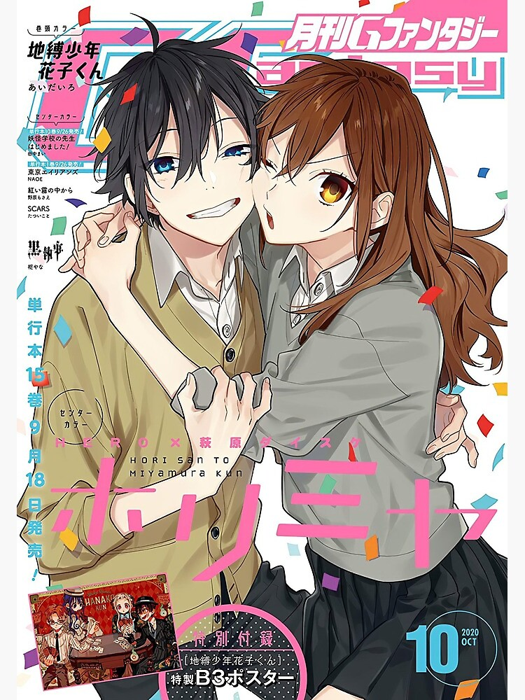 Hori-san to Miyamura-kun (堀さんと宮村くん, lit. "Hori and Miyamura") is a Japanese shōnen web manga series written and illustrated by Hiroki Adachi, under the pseudonym Hero. It was self-published on Hero's website, Dokkai Ahen, from February 2007 to December 2011 in a four-panel format. The series received a print publication by Square Enix, who compiled the chapters in ten volumes under its imprint Gangan Comics from October 2008 to December 2011. Additional side-story chapters were compiled as Hori-san to Miyamura-kun Omake (堀さんと宮村くん おまけ). Since 2012, Hori-san to Miyamura-kun was adapted into an original video animation series.
Daisuke Hagiwara adapted the manga under Hero's supervision under the title Horimiya (ホリミヤ), which was serialized in Monthly G Fantasy from October 2011 to March 2021,[1] and is published in English by Yen Press.[2] An anime television series adaptation of Horimiya by CloverWorks aired from January to April 2021. A live action and TV drama adaptation premiered in February 2021.
Plot
Kyoko Hori is a bright and popular high school student, in contrast to her classmate Izumi Miyamura, a gloomy and seemingly nerdy, glasses-wearing boy. At home, Hori is a homebody who dresses down and looks after her younger brother, Souta. She takes every attempt to hide this from her classmates, as to not disrupt her social status and cause others to worry. One day, Souta comes home with a nosebleed. He had been accompanied by a boy with numerous piercings and tattoos, who introduces himself as Miyamura. After recognizing Hori, even when she is dressed down, they agree to keep their true identities concealed from their peers. However, over time, when the two begin to learn more about each other, they learn they have more in common then they originally thought. Together, they agree to assist one another in keeping their after-school identities a secret. As time goes on, the two suddenly find themselves closer than ever.
Characters
Kyoko Hori (堀 京子, Hori Kyōko)
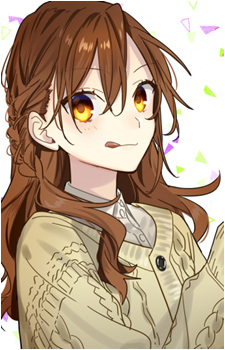Kyoko Hori (堀 京子, Hori Kyōko) Voiced by: Asami Seto (OVA), Haruka Tomatsu[4] (TV anime) (Japanese); Marisa Duran[5] (TV anime) (English) Portrayed by: Sayu Kubota (live-action and TV drama) Kyoko is a beautiful, bright, popular high school girl, but at home, she takes on a different look, dressing down and removing her makeup, tying her hair back, and doing housework while taking care of her little brother. She does not want her friends to see her in that state, but when Izumi Miyamura does, they agree to keep their real personas a secret. She begins to have romantic feelings towards Miyamura. She heard his confession to her when she seemed to be asleep. They became a couple after she admits Izumi is her boyfriend when her father asked her when Izumi was present.
Izumi Miyamura (宮村 伊澄, Miyamura Izumi)
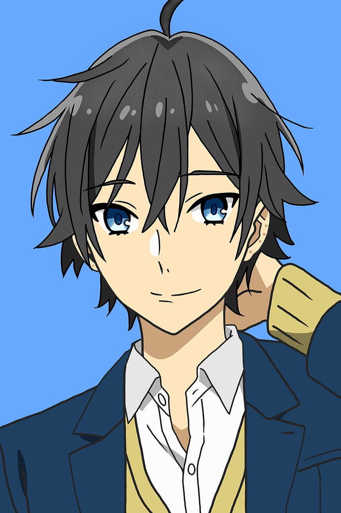Izumi Miyamura (宮村 伊澄, Miyamura Izumi) Voiced by: Yoshitsugu Matsuoka (OVA), Kōki Uchiyama (TV anime) (Japanese); Alejandro Saab[5] (TV anime) (English) Portrayed by: Ōji Suzuka (live-action film and TV drama) At school, Izumi appears to be a gloomy pseudo-otaku fanboy with glasses and keeps to himself. However, outside of school, he is rather good looking and laid back, with a punk-styled look and nine piercings (four on each of his ears, and one on his lip), as well as tattoos. Despite his school appearance, he has only a casual interest in manga and has mediocre grades. His family runs a bakery. He accepted his lonely existence but upon learning that Kyoko does not mind how he looks, he slowly gained confidence and friends among his classmates. Unlike his gloomy image in school, Izumi's look outside school would have easily gained him popularity with his pretty face that he hides under glasses. Izumi grows his hair long to hide his ear piercings, and wears long-sleeved shirts to cover his tattoos. He finds Kyoko's real side to be cute, even when she gets angry.He was fine with being friends but his honest attitude allows him to tell Kyoko the things he admires in her. They officially became a couple after Kyoko's dad asked Kyoko whether Izumi is her boyfriend.
Souta Hori (堀 創太, Hori Sōta)
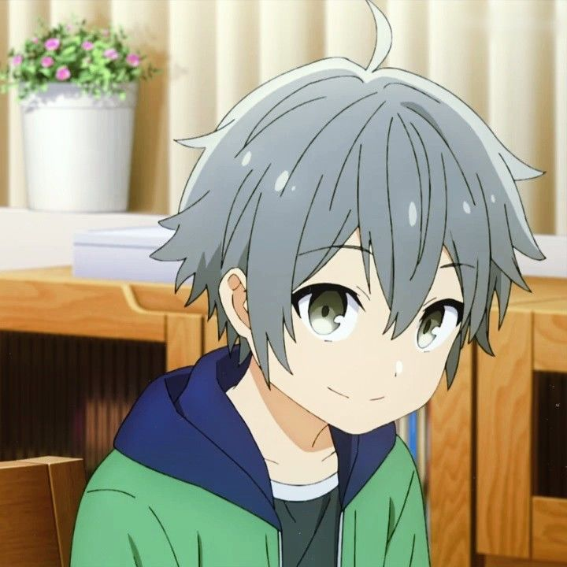Souta Hori (堀 創太, Hori Sōta) Voiced by: Yumiko Kobayashi (OVA), Yuka Terasaki (TV anime) (Japanese); Emily Fajardo (TV anime) (English) Portrayed by: Haru Takagi (live-action film and TV drama) Kyoko's little brother. After tripping and getting a nosebleed, Izumi brings Souta back to his home and where Souta constantly asks his sister to invite his new friend to come back. This gives Kyoko an excuse to hangout with Izumi after classes.
Toru Ishikawa (石川 透, Ishikawa Tōru)
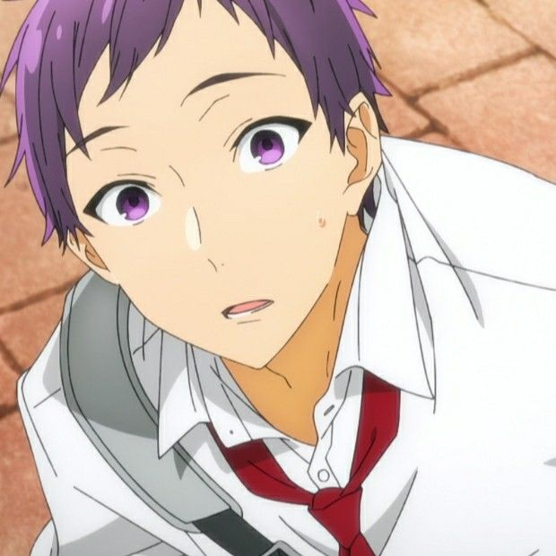Toru Ishikawa (石川 透, Ishikawa Tōru) Voiced by: Yoshimasa Hosoya (OVA), Seiichirō Yamashita (TV anime) (Japanese); Zeno Robinson (TV anime) (English) Portrayed by: Jin Suzuki (live-action film and TV drama) Toru likes Kyoko and befriends Izumi when he noticed the two are spending more and more time together. He learns of Izumi's secret about the tattoos and piercings. Toru confesses to Kyoko but is rejected. Izumi later considers him one of his friends.
Yuki Yoshikawa (吉川 由紀, Yoshikawa Yuki)
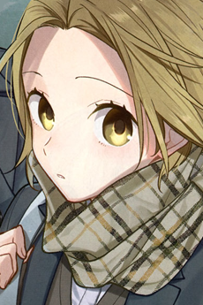Yuki Yoshikawa (吉川 由紀, Yoshikawa Yuki) Voiced by: Kana Ueda (OVA), Yurie Kozakai (TV anime) (Japanese); Anairis Quiñones (TV anime) (English) Portrayed by: Rion Okamoto (live-action film and TV drama) Kyoko's best friend; she was interested in Izumi when she accidentally saw him without glasses and did not recognize him. When she saw him again with Kyoko, Kyoko attempted to hide his secret between them by saying Izumi was her cousin. When Yuki met Izumi at Kyoko's home, he introduced himself as Konoha, after a manga character. Yuki has a crush on Konoha, but regards Izumi as an unattractive otaku.
Kakeru Sengoku (仙石 翔, Sengoku Kakeru)
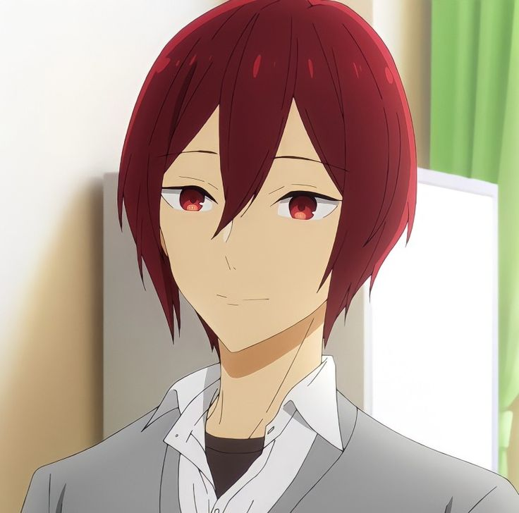Kakeru Sengoku (仙石 翔, Sengoku Kakeru) Voiced by: Nobunaga Shimazaki (OVA), Nobuhiko Okamot (TV anime) (Japanese); Belsheber Rusape (TV anime) (English) Portrayed by: Akira Onodera (live-action film and TV drama) Kyoko's childhood friend and the student council president. He is seen as a bit weak, but is capable. He befriends Izumi and is Remi's boyfriend.
Remi Ayasaki (綾崎 レミ, Ayasaki Remi)
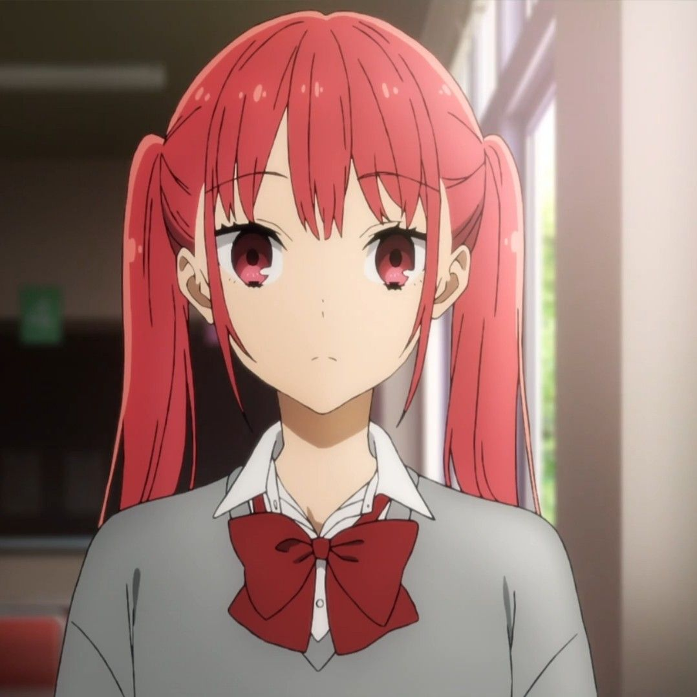Remi Ayasaki (綾崎 レミ, Ayasaki Remi) Voiced by: Akiko Hasegawa (OVA), M·A·O (TV anime) (Japanese); Jalitza Delgado (TV anime) (English) Portrayed by: Aya Marsh (live-action film and TV drama) A member of the student council, but is seen mostly as a mascot. She has a small build and is very playful with others. She is good friends with Sakura and is Kakeru's girlfriend.
Sakura Kono (河野 桜, Kōno Sakura)
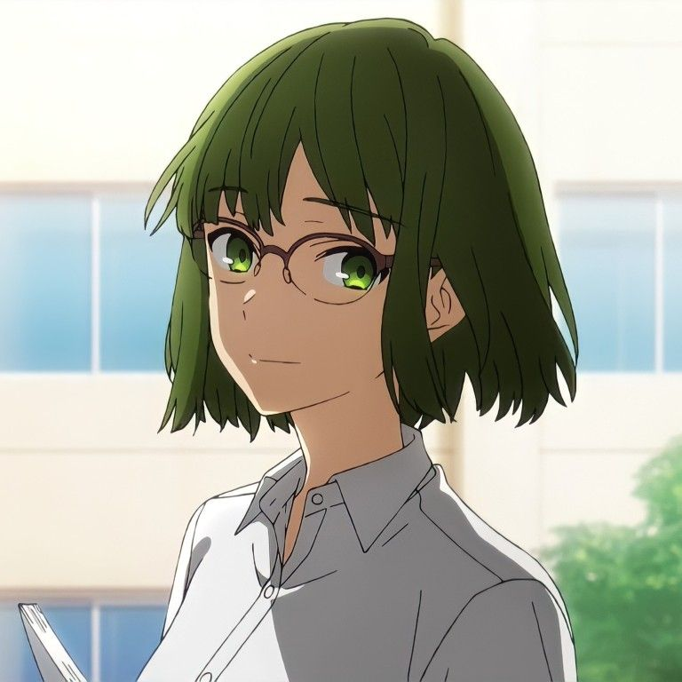Sakura Kono (河野 桜, Kōno Sakura) Voiced by: Yui Nomura (OVA), Reina Kondō (TV anime) (Japanese); Celeste Perez (TV anime) (English) Portrayed by: Sakura (live-action film and TV drama) A member of the student council, who does most of the work. She is shy and quiet, and later develops a crush on Toru.
Shu Iura (井浦 秀, Iura Shū)
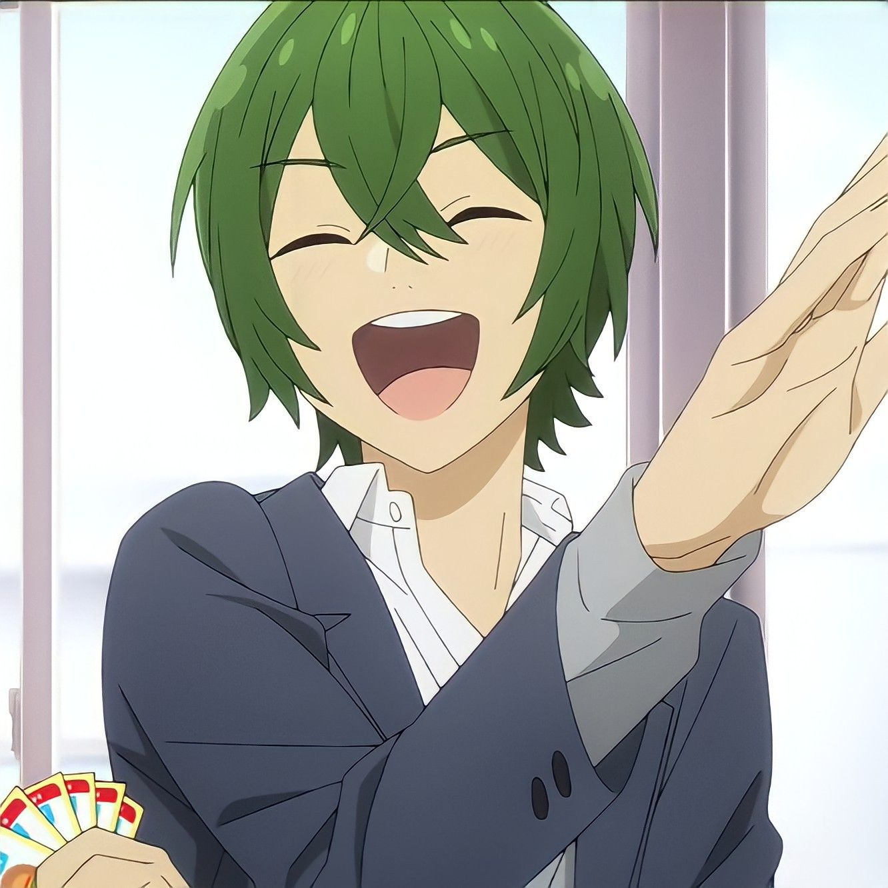Shu Iura (井浦 秀, Iura Shū) Voiced by: Hiro Shimono (OVA), Daiki Yamashita (TV anime) (Japanese); Y. Chang (TV anime) (English) Portrayed by: Ryōsuke Sota (live-action film and TV drama) Kyoko and Izumi's airhead classmate in their junior year but he was in a different class in their senior year.
Honoka Sawada (沢田 ほのか, Sawada Honoka)
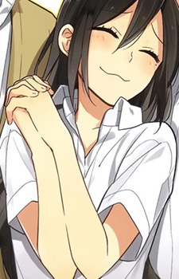Voiced by: Kei Imoto (OVA), Momo Asakura (TV anime) (Japanese); Apphia Yu (TV anime) (English) A student with a crush on Kyoko and Izumi's neighbor. She had an older brother who died a year ago.
Yūna Okuyama (奥山 有菜, Okuyama Yūna)

Yūna Okuyama (奥山 有菜, Okuyama Yūna) Voiced by: Aoi Koga (Japanese); Dani Chambers (English) Souta's kindergarten classmate who used to bully Souta for having a sister complex. After Izumi shows her some kindness, she and Souta become friends.
Other Characters